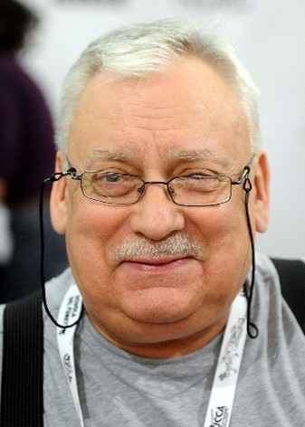

Bienvenue sur ce wiki ! Vous trouverez sur ce site des infos sur la série The witcher
La série The Witcher est une adaptation des nouvelles de Andrzej Sapkowski, un écrivain polonais d’histoires fantastiques et de fantasy
Andrzej Sapkowski a fait les éloges de l’acteur principale, il cite "J'ai été plus qu'heureux de voir Henry Cavill en Sorceleur. C'est un vrai professionnel. Tout comme Viggo Mortensen avait prêté avec conviction ses traits au personnage d'Aragorn, Henry fait de même avec Géralt. Et on s'en souviendra".